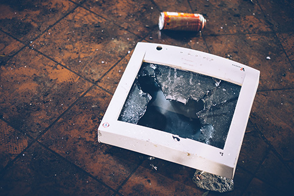
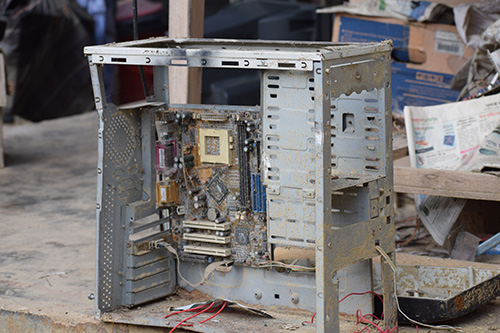

E-Waste and Recycling
With consumers replacing computers, phones, tables and laptops and other electronic goods more and more often these days, our landfills are becoming full of these obsolete and broken devices. Some of the components can be recycled. Many electronic products can be recycled and re-used but only about 22% of e-waste is recycled which means that 78% ends up as trash. Millions of tons of e-waste gets shipped around the world for other countries to try and extract some value from the rubbish. In doing so, the harm caused by e-waste is not restricted to the country of the consumer but also to many of the developing countries of the world. Old but functioning electronic equipment that is surplus to requirements for some Government Departments and businesses can be refurbished for use by disadvantaged communities. In this way, the quantity of e-waste to landfill can be reduced.
Where does e-waste go?

Most e-waste trash ends up in landfill, where it stays, as e-waste is not biodegradable. This means that huge amounts of land is needed to contain and store all the unrecycled e-waste. Health and the Environment:
Enviromental problems
E-waste also causes serious environmental problems because of many toxic chemicals used in electronic devices. These toxic chemicals, like mercury, arsenic, barium and lead, pollute the air, water and soil which harms our health, and that of animals, and damages ecosystems. Data Security:
Security

If computer hard drives are not wiped clean or destroyed at the time of disposal then some sensitive data can be recovered from these hard drives found in e-waste.
Trade in your old phone
Electronic and computer recycling
www.swapkit.co.nz
itrecycla.co.nz